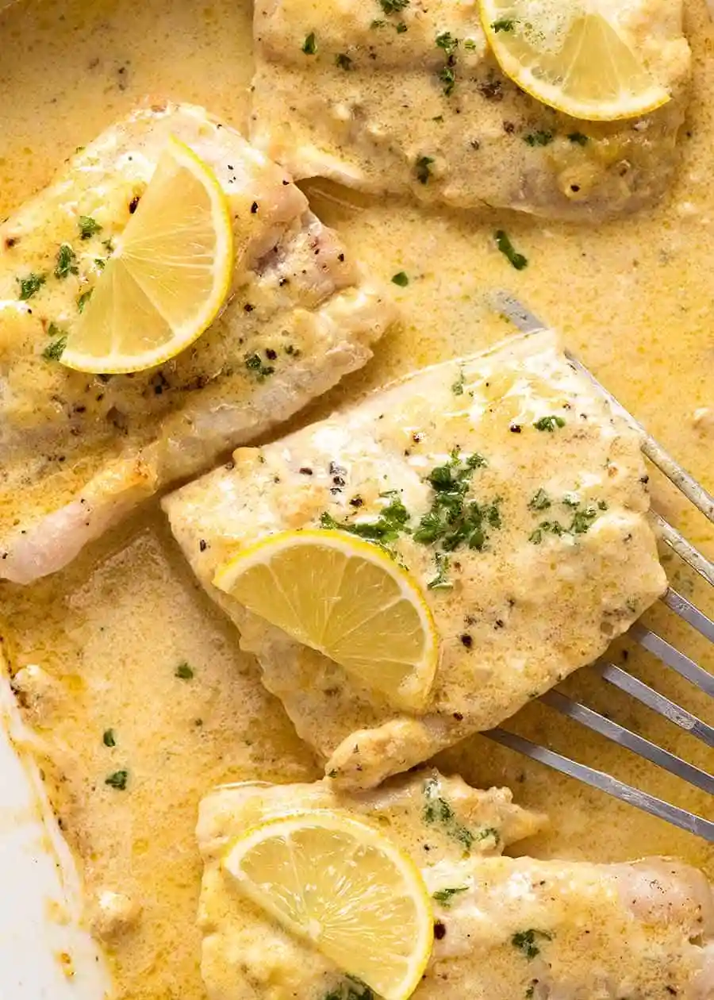

Baked Fish with Creamy Lemon Sauce

Desription
Video tutorial
Ingridients:
- 150- 180g fish fillets
- 50g / 4 tbsp unsalted butter
- 50g / 4 tbsp unsalted butter
- 1/4 cup cream, heavy / thickened
- 1 - 2 garlic cloves , minced
- 1 tbsp Dijon mustard
- 3/2 tbsp lemon juice
- Salt & pepper
- 1 1/2 tbsp finely chopped eschallots
- Fresh parsley and lemon slices , to serve
Steps:
- Preheat oven to 200°C.
- Place fish in a baking dish - ensure the fish isn't crammed in too snugly. See video or photos in post. Sprinkle both sides of fish with salt and pepper.
- Place butter, cream, garlic, mustard, lemon juice, salt and pepper in a microwave proof jug or bowl. Microwave in 2 x 30 sec bursts, stirring in between, until melted and smooth.
- Sprinkle fish with shallots, then pour over sauce.
- Bake for 10 - 12 minutes, or until fish is just cooked. Remove from oven and transfer fish to serving plates. Spoon over sauce, and garnish with parsley and lemon wedges if using.